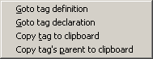

The Tag Context Menu is accessible by right-clicking on a tag or pressing the Windows Context Menu key in the tag list.
Select Goto tag definition to open the appropriate source file and center the cursor on the tag's definition.
Select Goto tag declaration to open the appropriate source file and center the cursor on the tag's declaration.
Select Copy tag to clipboard to copy the tag name to the clipboard.
Select Copy tag's parent to clipboard to copy the tag parent name to the clipboard.